Diese Anleitung fasst zusammen, wie die drei Projekte zusammenspielen. Jedes
Gerät hat zusätzlich ein ausführliches Handbuch – in seiner Weboberfläche im Tab Hilfe und als
docs/HANDBUCH.md im jeweiligen Projekt. Die Bilder der Weboberflächen zeigen Beispieldaten.
1 · Überblick
Ein Ultimate 64 (Elite, Elite II) oder C64 Ultimate kann den Ton des C64 als Audio-Stream ins
Netzwerk schicken – rund 250 Pakete pro Sekunde, Stereo, 48 kHz. Drei selbst gebaute Geräte nutzen diesen Stream:
Gerät
Was es macht
Erreichbar unter
Visualizer Raspberry Pi Pico 2 W + WS2812B-Matrix 8 × 32
Macht aus dem Ton eine Lichtshow (17 Modi). Ohne Musik zeigt er Lauftexte, die Uhrzeit, Titel der Jukebox und
Retro-News. Ton über den Stream oder über einen analogen Eingang.
c64viz.local
Audio-Empfänger Pico 2 W + DAC-Modul PCM5102A
Spielt den Stream an der Stereoanlage ab – ohne Kabel vom C64 zur Anlage, mit Jitter-Puffer und Taktnachführung.
c64audio.local
Pi-Jukebox Raspberry Pi 3B (oder neuer)
SID-Jukebox für das Ultimate (Dateien vom NAS, FTP, USB-Stick), Bedienung am Handy, Bild am Fernseher – und
Stream-Verteiler: holt den Stream über das Netzwerkkabel und reicht ihn an alle Picos weiter.
c64pi.local
Keines der Geräte ist Pflicht: Ein Visualizer läuft allein am Ultimate, ebenso ein Audio-Empfänger. Erst wenn
mehrere Geräte denselben Ton bekommen sollen, kommt es auf die Verkettung an.
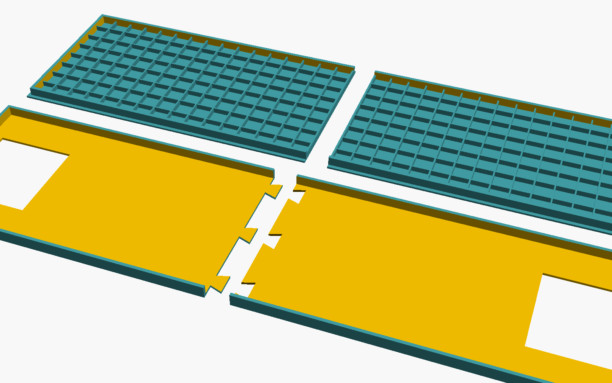
Gehäuseteile des Visualizers (3D-Druck,
Dateien im Ordner case/ jedes Projekts)Die Pi-Jukebox am Fernseher: Effekt
mit „Jetzt läuft“-Karte
Den Aufbau der Hardware (Schaltpläne, Stückliste, Gehäuse) beschreiben die README_DE.md der drei
Projekte. Fertige Firmware-Dateien liegen jeweils im Ordner firmware/.
2 · Das Wichtigste vorab
Das Ultimate streamt immer nur an ein einziges Ziel. Fordert ein zweites Gerät den Stream an,
nimmt es ihn dem ersten weg – beide wechseln sich dann ab. Sollen mehrere Geräte den Ton bekommen, holt ihn eines
und reicht ihn weiter: entweder der Pi an alle (Variante A) oder jedes Gerät an das nächste (Variante B).
Regel
Warum
Beim Ultimate immer die Ethernet-Adresse eintragen
Die Ultimates senden den Stream nur über das Netzwerkkabel. Die Netzwerksuche der Geräte nimmt automatisch
die richtige Adresse.
Unicast statt Multicast
Multicast macht viele WLAN-Router langsam: Webseite und Jukebox der Picos sind dann kaum erreichbar. Unicast und
Weiterleiten laufen dagegen flüssig (je Glied 250 Pakete/s, Ping ~2 ms).
Picos ins 2,4-GHz-WLAN
Der Pico 2 W kennt kein 5 GHz.
Jedem Gerät einen eigenen Namen geben
Zwei Visualizer heißen sonst beide c64viz (der zweite weicht auf c64viz-2 aus). Mit
festen Namen wie c64viz2 findet die Weiterleitung ihr Ziel zuverlässig.
Startpasswort commodore64 ändern
Gilt für alle drei Weboberflächen und die eigenen WLANs der Geräte. Den Benutzernamen fragt der Browser
bei den Picos auch ab – er ist beliebig.
Die drei Empfangs-Arten eines Pico
Einstellung beim Pico
Wann
nur dieser Pico (Unicast)
Der Pico holt den Stream selbst beim Ultimate. Für das
erste Gerät einer Kette oder ein einzelnes Gerät.
von einem anderen Pico weitergeleitet beim Empfänger: Haken „Stream kommt
weitergeleitet“
Der Pico fragt das Ultimate nie selbst, sondern wartet auf Pakete vom Pi
oder vom Gerät davor. Für alle Geräte hinter dem ersten – und für alle Picos, die der Pi beliefert.
mehrere Geräte gleichzeitig (Multicast)
Nur im Ausnahmefall, siehe oben.
3 · Jedes Gerät einrichten
Visualizer und Audio-Empfänger (Pico 2 W)
Firmware aufspielen: BOOTSEL-Taste am Pico halten, USB einstecken, die passende .uf2 aus
firmware/ auf das erscheinende Laufwerk kopieren (Visualizer:
c64viz_wifi_ws2812_usb-350mA.uf2 bzw. …_psu-1500mA.uf2 mit Netzteil; Empfänger:
c64audio.uf2). Beim eingebauten Visualizer geht es auch mit dem Modustaster statt BOOTSEL.
Eigenes WLAN des Pico: Ohne Einstellungen öffnet er einen Zugangspunkt – C64-Visualizer bzw.
C64-Audio, Passwort commodore64. Mit dem Handy verbinden und
http://192.168.4.1 öffnen (hier ohne Passwortabfrage).
Heim-WLAN eintragen (Visualizer: Tab „WLAN & Ultimate“, Empfänger: Tab „Einstellungen“): WLAN-Name und
-Passwort, einen Gerätenamen, ein eigenes Web-Passwort und das Ultimate („Netzwerk nach Ultimates
durchsuchen“ findet es). „Speichern und neu starten“.
Der Pico verbindet sich und ist danach unter http://<Gerätename>.local erreichbar. Die Matrix
des Visualizers lässt Adresse und Namen durchlaufen, z. B. „WLAN 192.168.1.231 c64viz.local“.
Pi-Jukebox
Mit dem Raspberry Pi Imager „Raspberry Pi OS Lite (64-bit)“ auf eine microSD-Karte schreiben; in den
Einstellungen Rechnername c64pi, Benutzer und Passwort festlegen und SSH einschalten.
Pi mit Netzwerkkabel anschließen (der Verteiler arbeitet über Kabel am zuverlässigsten).
Per SSH auf dem Pi (ssh <benutzer>@c64pi.local) das Projekt holen und installieren:
sudo apt install -y git, git clone https://github.com/sedorrr/c64-pi-jukebox,
cd c64-pi-jukebox, sudo ./install/install.sh. Alternativ vom Mac/Linux-PC aus im
Projektordner: ./install/deploy.sh <benutzer>@c64pi.local.
http://c64pi.local/ öffnen, mit commodore64 anmelden, unter Einstellungen das Passwort
ändern. Im Tab Geräte das Ultimate eintragen („Im Netz suchen“) und speichern.
Ohne Kabel und ohne bekanntes WLAN öffnet auch der Pi ein eigenes WLAN (C64-Jukebox,
Passwort commodore64, Seite meist unter http://192.168.5.1/) – er weicht dabei den
Adressen der Picos aus.
4 · Geräte verketten
Es gibt zwei Wege, denselben Ton zu mehreren Geräten zu bringen. Beide laufen flüssig; man wählt einen.
A · Pi als Verteiler
B · Kette ohne Pi
Wer holt den Stream?
der Pi (über Kabel)
das erste Gerät der Kette
Fällt ein Gerät aus …
… bekommen die anderen weiter Ton; nur der Pi ist zentral
… bekommen die Geräte dahinter nichts mehr
Titel und Retro-News
vom Pi an alle Picos
Titel der PC-Jukebox wandern die Kette entlang
Einrichten
Liste der Picos im Pi, jeder Pico auf „weitergeleitet“
Einricht-Assistent eines Visualizers
Variante A: der Pi verteilt an alle
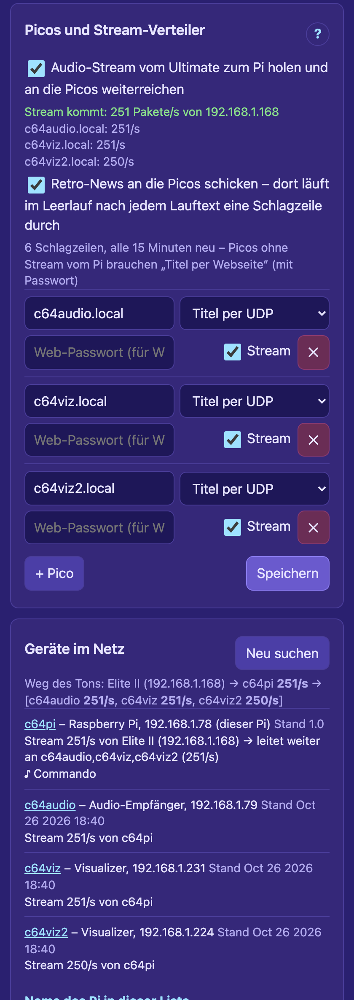
Pi, Tab „Geräte“: Verteiler an, drei
Picos, darunter der Weg des Tons
Am Pi (Tab Geräte):
Unter Ultimates das Ultimate mit seiner Kabeladresse eintragen und als aktiv markieren.
Unter Picos und Stream-Verteiler alle Picos eintragen (c64audio.local,
c64viz.local …) – oder ganz unten bei „Geräte im Netz“ auf als Pico eintragen tippen.
Je Pico: Titel per UDP und Haken Stream. Speichern.
Haken Audio-Stream vom Ultimate zum Pi holen und an die Picos weiterreichen setzen. Auf Wunsch auch
Retro-News an die Picos schicken.
An jedem Visualizer (Tab „WLAN & Ultimate“): „Audio-Stream vom Ultimate verwenden“ an, Empfänger
„von einem anderen Pico weitergeleitet“, „Stream weiterleiten an“ leer. Speichern und neu starten.
Am Audio-Empfänger (Tab „Einstellungen“): Haken „Stream kommt weitergeleitet“ setzen und die
Weiterleitung an den Visualizer ausschalten – der Pi beliefert ja alle direkt.
Kontrolle: Der Kasten unter dem Haken zeigt „Stream kommt: 251 Pakete/s“ und je Pico etwa 250/s. Unter
„Geräte im Netz“ (auf dem Pi und auf jedem Pico) steht der Weg des Tons als Baum: Elite II → c64pi 251/s → [c64audio 251/s, c64viz 251/s, c64viz2 250/s]
Steht ein Pico noch auf Unicast, holt er sich den Stream selbst beim Ultimate und nimmt
ihn damit dem Pi weg. Dann flackern die Zahlen zwischen den Geräten hin und her.
Mischformen gehen auch: Der Pi beliefert nur den Audio-Empfänger, der reicht an den Visualizer weiter usw. Ein Pico,
der den Stream von zwei Seiten bekäme, nimmt den ersten Absender und verwirft den zweiten.
Variante B: Kette ohne Pi – mit dem Einricht-Assistenten
Jeder Visualizer hat einen Einricht-Assistenten (Tab „Steuerung“, Karte „Geräte im Netz“, Knopf
„Einricht-Assistent: Geräte verketten“). Er findet alle Picos im Netz und stellt sie der Reihe nach ein:
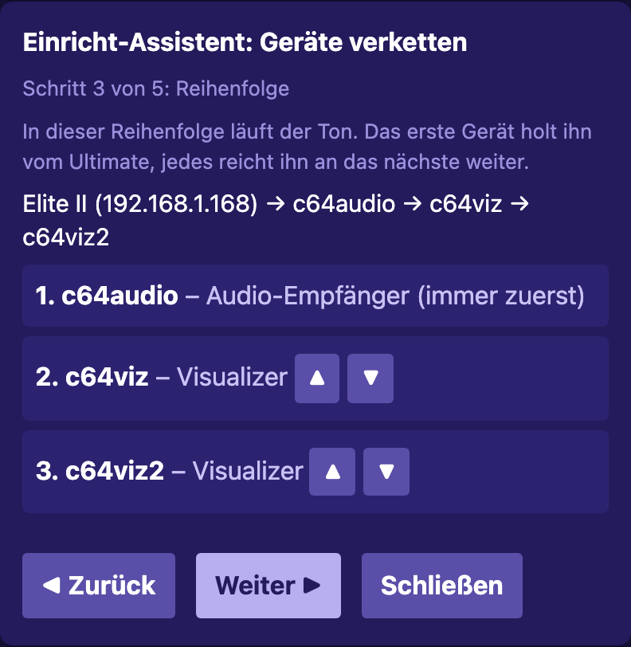
Schritt 3: Reihenfolge – ein
Audio-Empfänger steht immer vorne
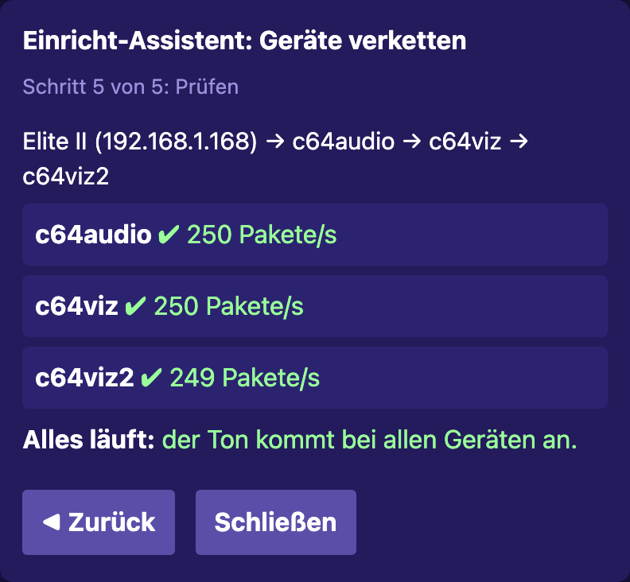
Schritt 5: Prüfen – der Ton kommt
überall an
Geräte anhaken, die mitmachen.
Ultimate wählen.
Reihenfolge festlegen (▲▼).
Einstellen: „Bei … einstellen“ öffnet die Seite jedes Geräts mit den Werten schon eingetragen (gelb
markiert). Dort mit dem Passwort dieses Geräts anmelden, prüfen, speichern. Ein Haken erscheint, sobald
sich das Gerät mit den neuen Werten meldet.
Prüfen: Pakete pro Sekunde bei jedem Gerät, vom richtigen Vorgänger.
Was der Assistent einstellt, lässt sich auch von Hand eintragen:
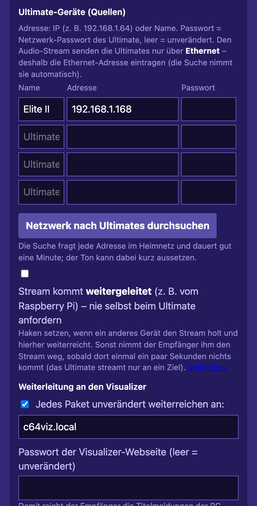
Empfänger als erstes Glied:
holt selbst, reicht an c64viz.local weiter
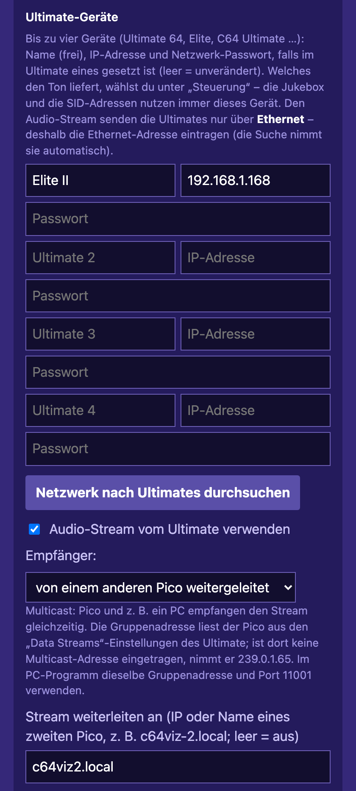
Visualizer in der Mitte: weitergeleitet,
reicht an c64viz2.local weiter
Gerät
Einstellung
erstes Glied
Stream an, Unicast (Empfänger: Haken „weitergeleitet“ aus),
Weiterleitung an das nächste
jedes weitere
Stream an, „von einem anderen Pico weitergeleitet“, Weiterleitung an das
nächste
letztes
wie davor, Weiterleitung leer
alle
dasselbe Ultimate eintragen (für Jukebox und SID-Adressen)
Damit Titelmeldungen der PC-Jukebox auch über den Audio-Empfänger ankommen, dort das Web-Passwort
des ersten Visualizers eintragen.
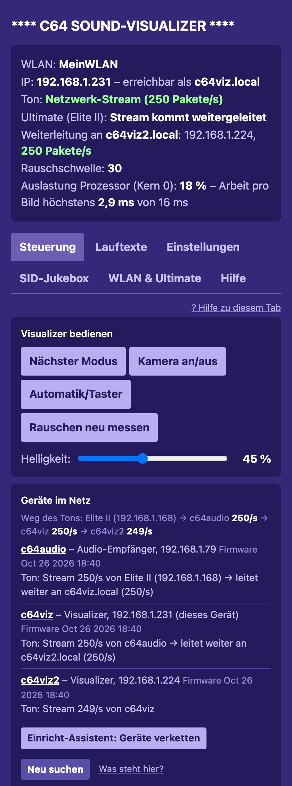
Visualizer, Tab „Steuerung“:
Statuskasten und „Geräte im Netz“ mit dem Weg des Tons
Kontrolle: „Geräte im Netz“
Jeder Pico und der Pi melden sich alle 10 s im Heimnetz. Die Karte Geräte im Netz zeigt auf jedem Gerät
dieselbe Übersicht:
Weg des Tons, z. B. „Elite II → c64audio 250/s → c64viz 250/s → c64viz2 249/s“. Bekommt ein
Weiterleitungsziel nichts, steht es rot am Ende.
Je Gerät: Name (Klick öffnet seine Seite), Adresse, Firmware-Stand, von wem es den Stream bekommt und wohin es
weiterleitet.
Warnungen, z. B. eine Weiterleitung, die nicht läuft, weil beim Gerät der Stream aus ist, oder ein
Name, der im Netz nicht zu finden ist.
Rund 250 Pakete pro Sekunde bei jedem Gerät heißt: alles in Ordnung. Deutlich weniger deutet auf Multicast
oder ein schwaches WLAN hin.
Bei Variante A verzweigt der Weg am Pi, z. B. „Elite II → c64pi 251/s → [c64audio 251/s,
c64viz 251/s, c64viz2 250/s]“ – auf jedem Gerät gleich.
5 · Bedienung
Pi-Jukebox: Musik auswählen und abspielen
Tab „Dateien“: Ordner durchklicken,
filtern, antippen spielt
Quellen: Netzwerkfreigabe (NAS, Windows, Mac), FTP-Server, USB-Stick am Ultimate oder am Pi.
Abspielen: Titel antippen; „Ordner abspielen“ nimmt alle Unterordner mit. Zufall, Liste wiederholen,
Wiedergabelisten speichern.
Titelwechsel genau am Ende mit der Songlängen-Datei der HVSC, sonst nach Zeitlimit oder Stille.
Knöpfe: ⏮ Anfang/voriger Titel · ▶/❚❚ Pause (Ultimate wird angehalten) · ⏹ Stopp (Ultimate wird
zurückgesetzt) · ⏭ nächster Titel.
Die Jukebox spielt selbstständig weiter, auch ohne offene Seite.
Am Handy: Seite „Zum Home-Bildschirm“ hinzufügen – sie öffnet sich dann wie eine App.
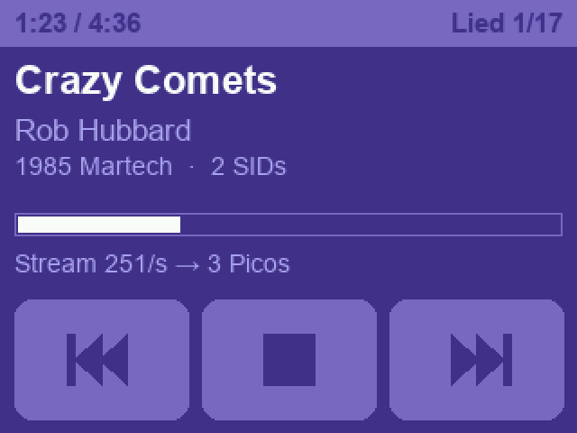
Optionales 2,8″-Display am Pi
Am Fernseher (HDMI) zeigt der Pi Effekte zur Musik, die SID-Stimmen, eine Diashow oder das Bild des C64,
dazu Titel und Spielzeit; bedienbar auch mit der Fernbedienung des Fernsehers (HDMI-CEC). Einstellungen im Tab 📺.
Effekt „Balken“ am Fernseher
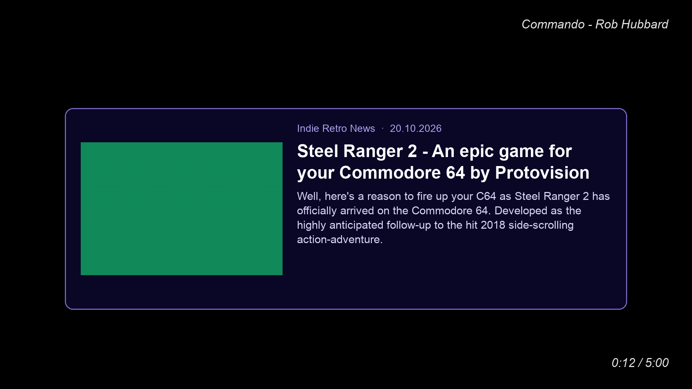
Retro-News als Karte am Fernseher
Visualizer
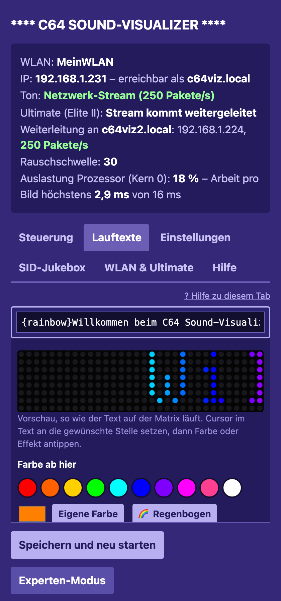
Tab „Lauftexte“ mit Vorschau, so wie
der Text auf der Matrix läuft
Musik startet die Lichtshow von selbst; nach einigen Sekunden Stille laufen die Lauftexte, auf Wunsch mit Uhr.
Bedienen lässt er sich am Taster oder auf der Webseite (Tab „Steuerung“, gleiche Funktionen):
Taster
Wirkung
kurz
nächster Modus
zweimal kurz
Kamera-Modus an/aus
dreimal kurz
Rauschen neu messen (vorher Musik anhalten)
0,7–3 s halten
Helligkeit 7 → 20 → 45 → 100 %
länger als 3 s
automatischer Moduswechsel oder nur per Taster
beim Einstecken halten
USB-Laufwerk zum Aufspielen einer Firmware
Lauftexte bekommen Farben und Effekte (Regenbogen, Glühen, Explosion, C64-Cursor …) per Knopfdruck;
„Speichern“ genügt. Weitere Einstellungen (Stille-Zeit, Schlaf, Nachtstunden, Stereo, zwei Matrizen,
Lichtsensor) stehen im Tab „Einstellungen“.
Die SID-Jukebox des Visualizers spielt auch ohne Pi Dateien vom USB-Stick am Ultimate oder vom PC.
Läuft die Pi-Jukebox, zeigt der Visualizer deren Titel.
Audio-Empfänger
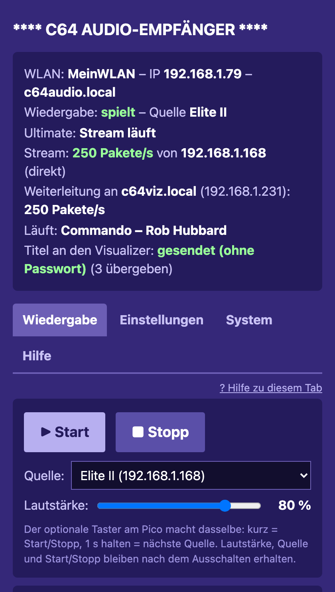
Tab „Wiedergabe“: Start/Stopp,
Quelle, Lautstärke
Start / Stopp und Lautstärke auf der Seite – oder am optionalen Taster: kurz = Start/Stopp,
1 s halten = nächste Quelle. Lautstärke, Quelle und Start/Stopp bleiben nach dem Ausschalten erhalten.
Der Empfänger puffert etwa 80 ms und regelt seinen Takt nach dem Ultimate (rund 47 983 Hz); ein fehlendes
Paket wird überbrückt statt zu knacken.
Kommen trotzdem Aussetzer (Zähler „Leergelaufen“), hilft ein größerer Puffer unter „Einstellungen“.
Vor dem ersten Ton die Lautstärke an der Anlage niedrig stellen.
6 · Besonderheiten
Titel und Retro-News auf der Matrix
Die Pi-Jukebox schickt zu jedem Titel Name, Komponist, Länge, Unterlied und SID-Adressen an die Picos. Die
Matrix zeigt den Titel, eine schwache Linie unten den Fortschritt; ein Stück mit 2 SIDs schaltet auf Stereo.
Titel per UDP (ohne Passwort) kommt nur bei Picos an, die ihren Stream vom Pi bekommen. Für alle anderen
im Pi Titel per Webseite wählen und das Web-Passwort des Pico eintragen.
Retro-News: Der Pi holt alle 30 Minuten Schlagzeilen aus öffentlichen RSS-Feeds (Indie Retro News,
amiga-news.de, Commodore News, Cascade64, The Oasis BBS …). Die Visualizer zeigen im Leerlauf nach jedem Lauftext
eine in Gelb, z. B. „+++ Neue Demo +++“. Abschalten: am Pi den Haken entfernen oder einzelne Feeds abwählen; an
einem einzelnen Visualizer @news off (Einstellung „Retro-News“).
Wenn ein Gerät fehlt
Bleibt der Stream aus, schaltet der Visualizer nach 0,25 s auf seinen analogen Eingang um (falls
angeschlossen).
Ein Pico auf „weitergeleitet“ fragt das Ultimate nie selbst. Ist der Pi (Variante A) oder das Gerät davor
(Variante B) aus, bleibt er ohne Stream.
Ausnahme in Variante B: Steht der erste Visualizer hinter dem Empfänger auf Unicast, holt er sich den Ton
selbst, wenn der Empfänger aus ist – und gibt ihn zurück, sobald der Empfänger wieder läuft.
Startet ein anderes Programm (z. B. am PC) einen Stream, nimmt es ihn dem Pi bzw. dem ersten Pico weg; die holen
ihn sich zurück, sobald das Programm aufhört.
Mehrere Ultimates
Alle Geräte kennen bis zu vier Ultimates (der Pi bis zu acht) und eine Quelle. Am Visualizer wird sie im
Tab „Steuerung“ gewechselt (nicht, solange seine Jukebox spielt), am Empfänger unter „Wiedergabe“, am Pi unter
„Geräte“ (aktiv). Bei Variante A genügt es, die Quelle am Pi zu wechseln. Ein Ultimate mit Netzwerk-Passwort
antwortet der Netzwerksuche nicht – dann von Hand eintragen.
Zwei Matrizen als ein Bild
Zwei Visualizer nebeneinander zeigen auf Wunsch ein Bild mit 64 × 8 Punkten (Tab „Einstellungen“ → „Zwei Matrizen
als ein Bild“). Einer rechnet das ganze Bild und schickt dem Partner seine Hälfte – am besten der, der den Stream
ohnehin bekommt.
Ohne Router: Party-Modus des Pi
Unterwegs spannt der Pi selbst ein WLAN auf – unter Name und Passwort des Heim-WLANs. Picos und Handys verbinden
sich dann wie zu Hause, das Ultimate kommt per Kabel direkt an den Pi (Einstellungen → Party-Modus).
Updates
Picos: Tab „WLAN & Ultimate“ (Empfänger: „System“) → „Firmware (.uf2) wählen …“. Alle Picos auf einmal:
python3 tools/update_all.py im Visualizer-Projekt. Einstellungen und Texte bleiben erhalten.
Pi: neuen Projektordner kopieren und install.sh bzw. deploy.sh erneut aufrufen;
Einstellungen und Listen bleiben.
Sicherung: jedes Gerät kann alle Einstellungen als eine Datei herunterladen und wieder einspielen.
7 · Fehlersuche
Was man sieht
Ursache und Abhilfe
Zwei Geräte bekommen abwechselnd Ton
Beide holen den Stream selbst. Alle Geräte außer dem ersten
(bzw. alle Picos bei Variante A) auf „weitergeleitet“ stellen.
„wartet auf weitergeleiteten Stream“
Beim Gerät davor fehlt die Weiterleitung, dort ist der Stream
aus – oder (Variante A) der Pico steht nicht in der Liste des Pi bzw. der Haken „Stream“ fehlt.
„Name wird gesucht …“, „Name nicht gefunden“
Gerät aus, anderer Name oder in einem anderen WLAN.
Notfalls die IP-Adresse statt des Namens eintragen.
Deutlich weniger als 250 Pakete/s, Webseite träge
Irgendwo ist noch Multicast eingestellt, oder
das WLAN ist schwach. Überall Unicast bzw. „weitergeleitet“ wählen.
Kein Stream, obwohl alles eingetragen ist
WLAN-Adresse des Ultimate eingetragen statt der
Ethernet-Adresse; oder im Ultimate ist die Web-Fernsteuerung (Network → Web Remote Control) aus.
Pi: „… Pakete von <Adresse> verworfen“
Das Ultimate schickt über eine Adresse, die im Pi nicht
eingetragen ist (meist seine WLAN-Adresse). Kabeladresse eintragen.
Titel erscheinen nicht auf der Matrix
Pico bekommt den Stream nicht vom Pi → im Pi „Titel per
Webseite“ mit dem Passwort des Pico wählen.
Pico landet im eigenen WLAN (C64-Visualizer / C64-Audio)
Heim-WLAN nicht gefunden oder Passwort
falsch. Er versucht es alle 5 Minuten erneut; Daten über http://192.168.4.1 korrigieren.
Passwort vergessen
Picos: wlan_reset.uf2 aufspielen (löscht nur WLAN, Ultimate und
Passwort). Pi: per SSH zurücksetzen, siehe Pi-Handbuch.
Jedes Gerät hat ein Diagnose-Protokoll (Visualizer: „WLAN & Ultimate“ → Diagnose laden, Empfänger:
„System“). Die ausführlichen Fehlersuche-Kapitel stehen in den Handbüchern (Tab „Hilfe“).
8 · Hinweise und Lizenz
Nur fürs Heimnetz. Die Weboberflächen laufen über HTTP ohne Verschlüsselung. Stream, Titel, Retro-News,
Gerätemeldungen und das Bild für zwei Matrizen gehen per UDP ohne Anmeldung – jedes Gerät im selben Netz
kann sie senden. Die Geräte nicht aus dem Internet erreichbar machen (keine Portweiterleitung) und nicht in fremden
oder öffentlichen Netzen betreiben.
Auf eigene Gefahr. Eingriffe am C64 oder Ultimate, der Aufbau der Geräte und die Stromversorgung der
LED-Matrix (bis zu mehrere Ampere bei voller Helligkeit) geschehen auf eigenes Risiko. Für Schäden an Geräten,
Hardware oder Daten wird keine Haftung übernommen.
Retro-News zeigen nur Schlagzeilen mit Quellenangabe; die Inhalte gehören den jeweiligen Seiten.
Getestet ist nur mit der Hardware und dem Heimnetz des Autors (Pico 2 W, WS2812B 8 × 32, PCM5102A, Raspberry Pi
3B, Ultimate 64 Elite II). Andere Router und Ultimate-Firmwares können sich anders verhalten.